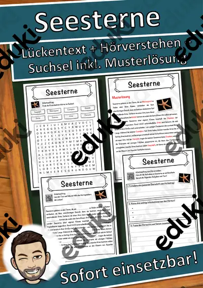
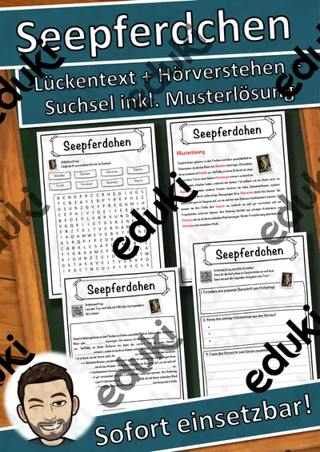

Fische und Meerestiere: Arbeitsblätter für Klasse 4–8 (Biologie)
Fische und Meerestiere sind Lebewesen im Wasser. Kinder lernen Körperbau, Atmung durch Kiemen und die Vielfalt der Meeresbewohner kennen.
Gearbeitet wird in der Regel an Kiemen, Flossen und Schuppen, ergänzt um Korallenriff, Haie und Lachs.
Wo genau im Lehrplan das Thema steht, unterscheidet sich von Land zu Land, häufig im Fach Biologie in den Klassen 4 bis 8. Gemeinsames Ziel: die Schülerinnen und Schüler beschreiben Anpassungen an das Leben im Wasser.
Wer Fische und Meerestiere auf mehrere Stunden verteilt, startet mit Kiemen, übt an Schuppen und schließt mit Haie ab. Alle Blätter sind kopierfertig und enthalten Lösungen für die schnelle Kontrolle. Zur Differenzierung eignen sich die Lesespurgeschichten mit ihren drei Niveaustufen.
21 passende Materialien stehen bereit, etwa Steckbriefe Meerestiere, Der Lachs und Der Delfin. Vertreten sind 4 Lesespurgeschichten und 16 Lückentexte mit Hörverstehen; die Stufen reichen über Klasse 3–8. Ein Besuch im Aquarium oder eine Fotoreportage aus einem Riff liefert Bilder für das Thema.
Das gehört zum Thema
Passende Arbeitsblätter und Materialpakete

Steckbriefe Meerestiere – Materialpaket (10 Tiere aus dem Meer, differenziert, mit Lösungen)

Der Lachs – Lesespurgeschichte mit Rätselaufgaben (Klasse 8)

Der Delfin – Lesespurgeschichte mit Rätselaufgaben (Klasse 8)

Die Muschel – Lesespurgeschichte mit Rätselaufgaben (Klasse 8)

Das Korallenriff – Lesespurgeschichte mit Rätselaufgaben (Klasse 8)

Seesterne Lückentext mit Wortspeicher Hörverstehen und Suchsel

Seepferdchen Lückentext mit Wortspeicher Hörverstehen und Suchsel

Thunfische Lückentext mit Wortspeicher Hörverstehen und Suchsel

Quallen Lückentext mit Wortspeicher Hörverstehen und Suchsel

Forelle Lückentext mit Wortspeicher Hörverstehen und Suchsel

Haie Lückentext mit Wortspeicher Hörverstehen und Suchsel

Fische Lückentext mit Wortspeicher Hörverstehen und Suchsel

Muscheln Lückentext mit Wortspeicher Hörverstehen und Suchsel

Krebse Lückentext mit Wortspeicher Hörverstehen und Suchsel

Krebs (Krankheit) Lückentext mit Wortspeicher Hörverstehen und Suchsel

Korallen Lückentext mit Wortspeicher Hörverstehen und Suchsel

Lachse Lückentext mit Wortspeicher Hörverstehen und Suchsel

Meerestiere Lückentext mit Wortspeicher Hörverstehen und Suchsel

Karpfen Lückentext mit Wortspeicher Hörverstehen und Suchsel

Delfine Lückentext mit Wortspeicher Hörverstehen und Suchsel

Aal Lückentext mit Wortspeicher Hörverstehen und Suchsel
Häufige Fragen
Für welche Klassenstufe passen die Arbeitsblätter zu Fische und Meerestiere?
Die 21 Materialien zu diesem Thema sind für Klasse 3–8 ausgelegt, die meisten davon für Klasse 6. Einzelne Titel lassen sich mit Anpassung auch eine Stufe darunter oder darüber einsetzen.
Welche Inhalte decken die Materialien zu Fische und Meerestiere ab?
Behandelt werden unter anderem Kiemen, Flossen, Schuppen und Korallenriff. Welche Aspekte in Ihrer Klasse Vorrang haben, richtet sich nach dem Lehrplan Ihres Bundeslandes.
Wie setze ich Fische und Meerestiere im Unterricht ein?
Ein Besuch im Aquarium oder eine Fotoreportage aus einem Riff liefert Bilder für das Thema. So entsteht aus den Blättern eine kleine Einheit, die sich auf zwei bis drei Stunden verteilen lässt.
Mehr Material nach Fach und Klasse
- Alle Materialien Biologie
- Arbeitsblätter Biologie Klasse 4
- Arbeitsblätter Biologie Klasse 5
- Arbeitsblätter Biologie Klasse 6
- Arbeitsblätter Biologie Klasse 7
- Arbeitsblätter Biologie Klasse 8
- Unterrichtsmaterial Klasse 4
- Unterrichtsmaterial Klasse 5
- Unterrichtsmaterial Klasse 6
- Unterrichtsmaterial Klasse 7
- Unterrichtsmaterial Klasse 8
Verwandte Lehrplanthemen
- Säugetiere (Biologie, Klasse 3–8)
- Atmung, Verdauung und Organe (Biologie, Klasse 5–9)
- Fotosynthese (Biologie, Klasse 5–9)
- Herz und Blutkreislauf (Biologie, Klasse 5–9)
- Ökosysteme und Nahrungsnetze (Biologie, Klasse 5–9)